← 返回阅读库 · 原论文目录
论文讲解阅读文档 · 表征学习 · v202
SODA Bottleneck Diffusion Models for Representation Learning[2311.17901]
视频时长 00:13:58；讲解文字 6,479 字符；提取讲解画面 22 张。按视频原顺序阅读，每段文字保留时间戳。
文字来自整段视频的自动语音转写，按自然停顿分段，并与 PPT / 论文页面 / 演示画面对齐。未将讲解压缩为摘要；术语、数字和口述公式请结合画面及原论文核对。 阅读稿已校正规范部分明确术语误识别；原始逐字稿和每处修改记录另行保留。
讲解画面为源视频截图（640×360），不是可编辑 PPT 文件。全片按每秒 2 帧扫描内容变化，逐步展开页保留；连续动画保留代表画面。清晰度受源视频限制。
下载完整资料包 · 含离线 HTML、PDF、Word、全部 PPT 画面和字幕。
原论文与材料
SODA: Bottleneck Diffusion Models for Representation Learning · 下载完整 PDF（24 页）
按时间阅读
00:00:00–00:00:43 · 画面 001
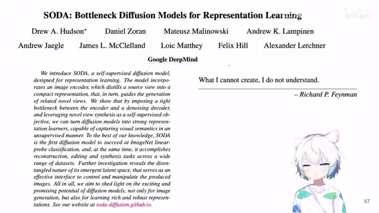
00:00:00–00:00:43 · 画面 001大家好，今天我们来快速水一篇论文，SodaBottleneck Diffusion Models for Representation Learning这一篇呢，正如它标题所显示的一样，是使用了一个 Diffusion Model，用它呢作为一个辅助任务，甚至其实它本身也是一个主要的任务，来帮助我们训练一个好的 Image Encoder 做 Representation Learning 嘛。同时呢，你训练出来这个 Diffusion Model，它也有好的性能，它也能够帮助我们去做更多的 Novel View Synthesis 这样的任务。
是一个很有意思的一个工作，那么他在开篇呢，也是引用了著名物理学家费曼的这个名言，What I cannot createI do not understand，是一个很有意思的表达。那么我们直接来看，那本文的核心呢，就是我的这个输入的一张图像作为我的这个 diffusion 过程中生成的这个 condition。
00:00:43–00:01:41 · 画面 002
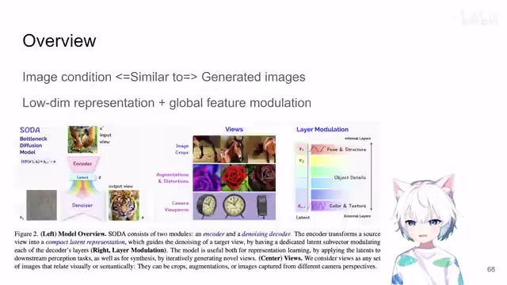
00:00:43–00:01:41 · 画面 002这个图像呢，经过一个 image encoder 得到这个 latent space latent encoder，它是一个 low dimensional 相对 low dimensional 的一个 representation。然后呢，你把这个 representation 作为 condition 加到我们的这个 denoise 的过程中，期望呢这个生成的图像跟你输入的图像我们就可以让它设置的存在一定关联。这个呢就是本文最核心的这样一个思路。那就像有的人说的，出走半生归来仍是少年这个。
进了 diffusion model 里面转了一圈出来之后呢，还是这个小猫咪。那么当然呢，作者呢在这里有很多的技巧，比如说最重要的就是这个 global feature modulation 这个工作这个设计，那么帮助我们真正的能够把这样的任务训练起来。好，下面我们仔细来看。
00:01:41–00:03:41 · 画面 003
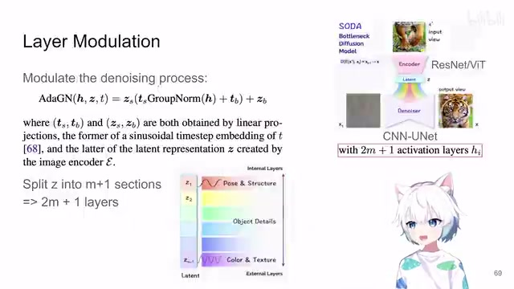
00:01:41–00:03:41 · 画面 003那么正如我们之前说的，本文的重点呢是这个 layer modulation。我们来看到这边的这个网络的结构呢对吧？我们想要训练一个好的 image encoder，一个图像进来，这个 encoder 呢给我们一个 latent，这个 latent 呢之前我们也说了，是一个尺寸非常小的，只有 2048 的这样一个 vector。然后呢，这个 vector 作为 condition 加到我们的这个 denoise 的这个过程中，你的 encoder 嘛当然是你可以随意的用 resnet vit 什么的都可以。那么这里的 denoiser 呢。
作者用了一个是 CNN base，确切说是 ResNet-based 的这么一个 U-Net。那么这个 denoiser 也就是我们常见的这个 diffusion 里面的 U-Net，它的特别之处在哪里呢？就是它是一个对称的网络，然后呢，它里面有 2m 加 1 个这个它这里说是 activation layers，那么本质上就是你理解为我现在有 2m 加 1 个槽位，这个槽位呢可以把我们的这个 latent 这个 vector 给它插入进来。
那么在这个过程中呢，让我们的这个 latent vector 去影响我们这个 denoise 的这个过程，这个呢是网络上的一个设计。那么下面呢我们就要来看，对于这样每一个槽位来说，我们怎么样把它融合起来呢？那这里做着具体的融合的方法呢是这样子的，在 group normalization 这个地方动了手脚，我们来看啊。
那么 h 呢是我们的 denoiser 上一层进来的啊出入的这个东西，你标准呢你是做 group normalization，但是这里呢作者用了两种调制，第一种呢你看啊它成了一个 ts 加一个 tb 啊，这个 tstb 从哪里来呢？就是当前这个时刻的啊，确切说是这个正弦编码过的这个 diffusion step。它的这个东西的 linear projection一个是 scale 一个是 bias那这里先调制一下。
那么调制完它之后呢。再加上我们的 condition也就是这个 latent这个 z z 呢也是过这个 linear layer有一个这个 scale有一个 bias这样一个调制那么这样调制之后呢。输出的结果呢就扔到下一层
00:03:41–00:05:01 · 画面 004
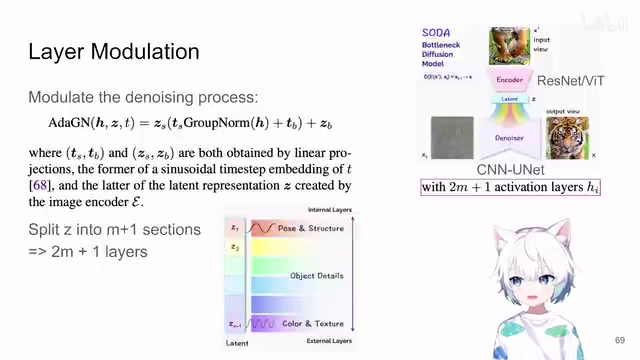
00:03:41–00:05:01 · 画面 004那么当然我们为什么要特别强调。这里有 2m 加一个层呢。因为你的每一层并不是把所有的这个 z 都拿过来用。并不是把所有的这个 latent 都拿过来用。实际上呢在操作的时候呢它是把这个 z它这么大的一个 vector 嘛。它分成了 m 加一个这个 section。就是多开嘛变成 m 加一个小的 vector m 加一个 vector 呢对称的分布到这个 2m 加一个层里面。
那比如说 z1它就对应的是最中间的这一层这个槽位z2 呢就是中间偏左一个的槽位偏右一个的槽位对吧对应的这两个那最后到 zm m 加 1就是你一开始最开始的这一层和最后的这一层这样子对称的一个分布那做成这样的设计呢很明显就是希望我的这个 latent 里面它不仅有能够调制我们一开始这些低级的这些 unet 的它的信息同时也要拥有能够调制这些高级的语义信息的就是在网络最中间的这一块的这样的 condition 你看到这种设计它就在不同的尺度上让我们的 latent 包含各种各样的信息
不然你想，一整个 latent 丢进来，指不定他学的就是哪一层的对吧？他是有可能出现这样的问题的。那么这个呢就是作者做的这个 layer modulation。那么与此同时发生的呢还有一个技术叫做 layer masking，这个呢其实更好理解，就是你再分完了这 M 加一个这个段之后，你不是正要把这些 condition 一个个的加到这个 denoiser 里面吗？对吧，这时候作者说等一下，等一下，我们这里要 randomly dropout 或者叫 zero out 一部分的这个。
00:05:01–00:07:01 · 画面 005
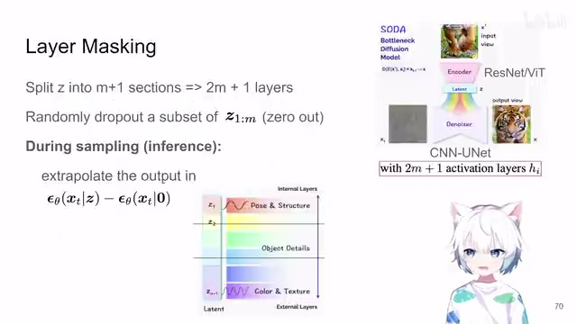
00:05:01–00:07:01 · 画面 005从 1 到 M 之间的这样的这个 latent 这样一个 condition 就是随机的把你这个 M 个 section 里面的任意的一个子集给它全部都设置成 0 就相当于有的 condition 我们就跳过了就不加了那么它带来的好处呢作者就是说让我们的网络不是总依赖于这个 latent 不是让它就锁死了你看看这个图里面演示的一样对吧我们就随机的拿掉几个 vector 你需要让他在拿掉这些 vector 的情况下依然能够完成原来有的这种训练是这个样子的同时呢，在采样生成图片的时候呢，你不是只估计一个 noise 就完了，你呢估计一个带 condition 的这个 noise，估计一个完全没有 condition 的这个 noise。那么这两个 noise 一解，它在这个 latent space 里面不就有一个方向了吗？那这个方向就是从你什么条件都不加指向你加上了这个自己的这个 condition。那么作者呢有时候呢还会在这个方向上继续做外插，就是沿着这个方向继续。
把这个值放大一下那么这样子作者说能够给文章在特定属性的编辑上特定画风的这种编辑上带来更多的自由度也好更多的操纵性也好等等那么有了这样一个设计之后呢我们知道了这样一个 image condition 怎么样去影响我们的这个 denoiser 怎么样去生成的这个图像然后呢我们只要选定好你的输入的图像是什么输出的图像是什么你就按照标准的这个 ddpm 这样的这个 diffusion 来做来去训练这个模型就好了那么你训练完了之后呢你这个 denoiser 可以留着去生成图你的这个 encoder 呢你就可以拿它做一个这个 feature extractor 对吧
做一个这个 backbone network，一鱼两吃，非常好的一个设计。那么下面呢，我们就只要关注我们输入的这个 vue 和输出的 vue，它们都应该是什么样子的对吧？那么首先最基础的当然就是我一张图进一张图出对不对？就是像一个甚至像一个 autoencoder 一样，你一个 patch 进去，让它把另一个 patch 给它吐出来。
00:07:01–00:07:10 · 画面 006
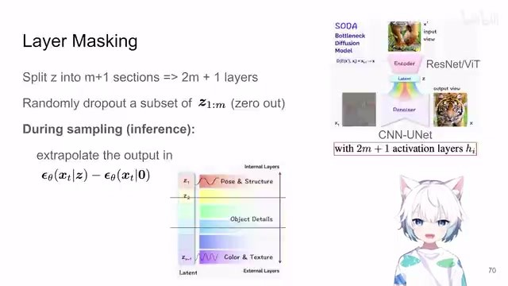
00:07:01–00:07:10 · 画面 00600:07:10–00:08:11 · 画面 007
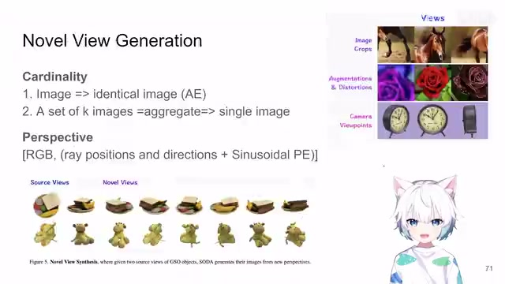
00:07:10–00:08:11 · 画面 007这个时候很多朋友就想到了这个 self-supervised learning 里面各种 contrastive learning 也好，本质上都是用这个语义不变性来训练了这个东西。那么当然呢，你也可以做的激进一点，那就是我很多张相似的图送到这个 image encoder 里面，然后呢把他们的所有的这个 latent 你做 aggregate，你无论是做平均也好，或者是送到一个小 transformer 里面把它们整合一下也好等等，然后呢用这一个这个 latent 用这一个 representation。
去重建出一张图像来，同时作者在这里更多的是探索我生成一些新的 view。你可以看到这个任务，我给两张图，一张比如说这个是顶视的，一张是正视的，然后我们让生成更多的视角的这样的图像。那在这种情况下呢，我们的这个输入的这个 view，它就不仅仅是 RGB 的图像了。同时呢，作者还在这个 channel 叠了每一个点的光线的位置还有它的方向，加上这个正弦的这个 position encoding，正弦的这个位置编码就送到这个 diffusion 里面，让你的 diffusion 网络呢也生成类似的这个 RGB 加上光线的方向还有这个位置。那么这个呢就是作者这里演示的生成一个新的视角了，这个呢是一个任务。
00:08:11–00:08:12 · 画面 008
00:08:11–00:08:12 · 画面 00800:08:12–00:08:34 · 画面 009
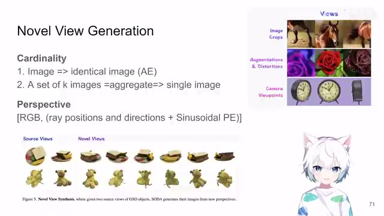
00:08:12–00:08:34 · 画面 00900:08:34–00:08:35 · 画面 010
00:08:34–00:08:35 · 画面 01000:08:35–00:08:37 · 画面 011
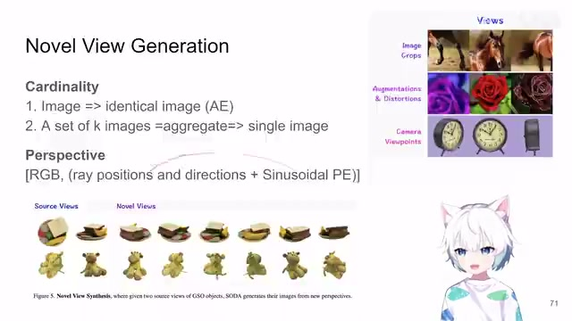
00:08:35–00:08:37 · 画面 011那么下面呢还有这个 classifier free 的 guidance。那这一块我不是很确定啊。那么它大概的意思就是说啊，我们之前不是说 latent 的有些地方我们会随机的给它这个 zero out 掉，我们会随机的给它 drop out 掉对吧？那么之前我们介绍了这个光线的这个信息，这里作者叫它这个 pose information，这个东西呢也可以随机的给它 drop out 掉。据说呢可以改变局部的这个生成的性能。
00:08:37–00:08:52 · 画面 012
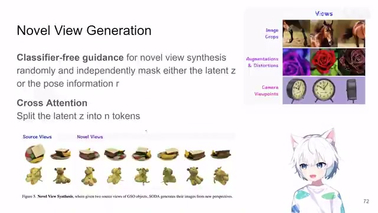
00:08:37–00:08:52 · 画面 01200:08:52–00:08:55 · 画面 013
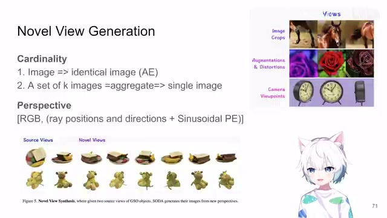
00:08:52–00:08:55 · 画面 01300:08:55–00:09:28 · 画面 014
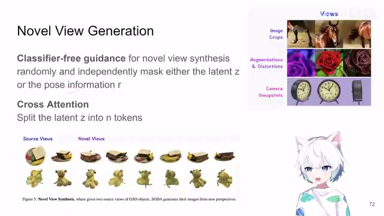
00:08:55–00:09:28 · 画面 014同时作者也是了对吧？我之前我们像我们的 latent diffusion 一样，我用 cross attention 来去做 condition 和我们 denoising 的融合，而不是使用我们现在的 layer modulation 来做。那么效果是怎么样的对吧？作者也是试了的。那么这些感兴趣的朋友你可以在实验部分非常丰富的详细的实验的部分去找它的对应的任务。
00:09:28–00:10:58 · 画面 015
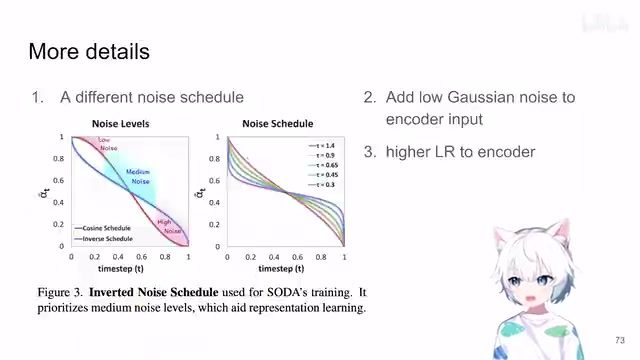
00:09:28–00:10:58 · 画面 015那么在我们进到实验部分之前对吧，还有一些小的细节，比如说呢，这里呢作者说他使用的训练的时候，特别是在做这个 image classification 做 self-supervised learning 这些任务的时候，他用了一个不同的这个 noise schedule。你看到原来这个红色的是这个 cosine schedule，这里呢作者用了一个这个 inverse schedule，他发现虽然这样子做呢对于我们的这个图像的生成的质量。
可能是要下降一些，但是呢它会意外的可以改善我们的这个图像的分类的质量。这是一个很有意思的观察。但是呢这个东西它的这个具体的公式好像这个文章中也没有提，这个套是什么意思对吧？不同这个套它对应的这个值是什么？好像也没有提可能第一个版本东西比较多啊就疏忽了这一点或者是我确实没有看到我是我没有发现这个地方那么如果了解这个方向的朋友呢感谢你的指导那么这个呢是一个很特别的这个 noise schedule 那么第二点呢就是他做着发现啊我在我输入的给 encoder 的这个输入的图像里面加一点高斯噪声可能呢能够帮助我们的训练
这是一个很有意思的观察。那么第三个呢，就是我在训这个 encoder 还有这个 denoise 的时候，encoder 给的这个 learning rate 稍微大一点这样子会比较好。这是一些小的实现的细节。那当然更具体的实现的细节在它的这个附录里面有非常详细的描述。下面我们就可以看到它的这个实验的部分。首先自一开始我们既然是做的这个 self-supervised learning。
00:10:58–00:12:43 · 画面 016
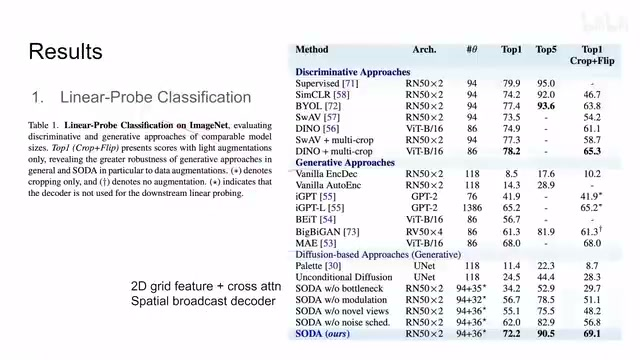
00:10:58–00:12:43 · 画面 016我们就要想要看到它的这个 encoder 它的性能如何对吧？那这个时候呢用一个 linear probe 让它做 classification 的任务，我们来看一下。那么本文的效果呢也可以说是非常的不错的，相比于之前的这些方法很多的我们都介绍过了。那么这里呢注意我们看到几个重要的 ablation。首先呢是这个没有 bottleneck，这里的 bottleneck 指的就是我们这个 image encoder 它出来的这个 dimension 是很低的，是一个 2048 的这样一个 vector。
这里呢假如说他是一个这个 2D 的 image，然后呢我用这个 cross attention 去做这个 modulation，因为你也没法用这个他现在有的这个 layer modulation 了，那他来做效果如何？那么这个 modulation 呢，是这个 spatial broadcast decoder。那么这个配置呢，相当于你用你的这个 latent vector 复制很多遍，用复制之后呢，把它填满整个这个空间尺度上这个 spatial dimension，就是相当于你每一个像素加上一堆 channel。然后呢，这新加的这个 channel 呢，就是你前面的这个 backbone 出来的这个 latent vector。那么这个实现呢，就是这个 spatial broadcast decoder。
感兴趣的朋友呢，你可以去看这篇文章。那么还有其他的这些 ablation 对吧？那么这个是一个方面。那么这里呢，我们来注意到这个地方，作者只用了一个最简单的 augmentation，前面这些。实验都是用这个 RandAugment 来跑的。那这里呢，用一个最简单 augmentation，只用这个 crop 加 flip 啊。可以看到本文的这个效果依然能够取得不错的这个结果啊，甚至比之前的这些方法都要高了。说明了本文这个方法呢，对于你这个 augmentation 是不怎么挑剔的。同时呢，我们来注意到，那么这个呢，是最核心的 self-supervised learning 相关的实验。
那么再往下呢，还有这个 Visual Synthesis。那这里呢，只有两个子任务，一个是这个 Reconstruction，就是你 Condition 的这张图作为输入，你把它重建出来结果是怎么样的对吧？对比了之前的这些方法。那么更重点呢，是这个 Novel View Synthesis，就是我们之前也说了，我给两个视角的这个图让它生成新的视角的图会生成什么样子？你可以看到本文实现的这个。
00:12:43–00:12:55 · 画面 017
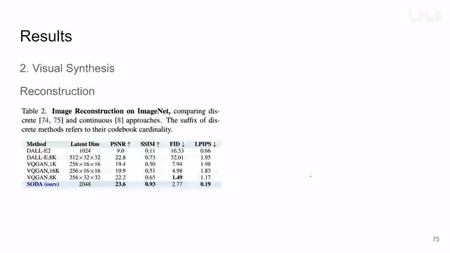
00:12:43–00:12:55 · 画面 01700:12:55–00:13:05 · 画面 018
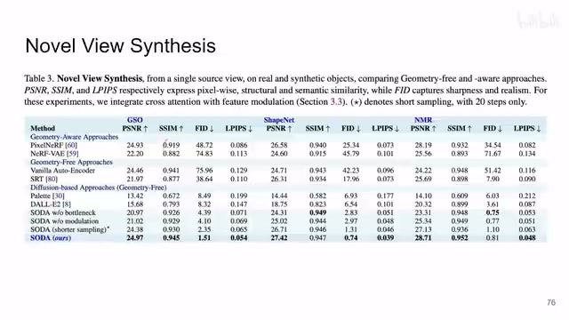
00:12:55–00:13:05 · 画面 01800:13:05–00:13:06 · 画面 019
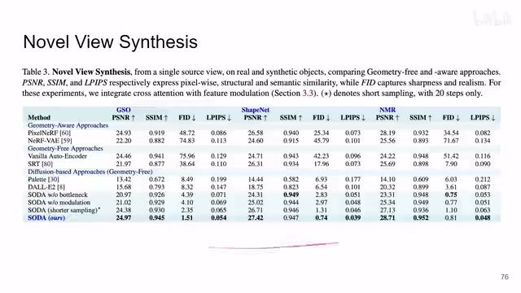
00:13:05–00:13:06 · 画面 01900:13:06–00:13:20 · 画面 020
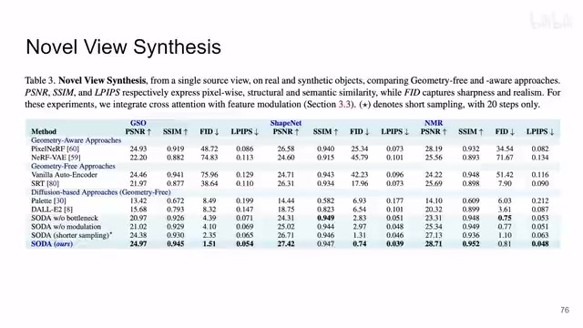
00:13:06–00:13:20 · 画面 020结果。那么当然这一块呢，也是有很多详细的实验分析，还有更多的 ablation，作者为什么选了一些超参数等等等等。感兴趣的朋友呢，非常推荐你到原文到他的附录中去挨个的查看。那最后呢，作者还有一些例子，像我们展示了我在这个 latent space 里面相互游走对吧？这个 latent space 不断变化的过程中。
00:13:20–00:13:58 · 画面 021
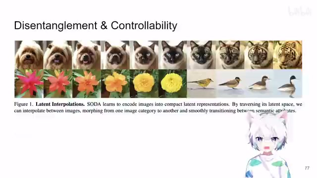
00:13:20–00:13:58 · 画面 021这个图像生成图像的变化。那么这个呢，作者也是有详细的分析的。那么总的来说呢，这篇文章呢，很巧妙的把我们这个 diffusion 作为一个自监督的任务，不仅能够得到一个好的 image generator，同时呢，也得到一个好的这个 image encoder。做 self-supervised learning 也是很好的一个效果。那整个文章的实验呢，也是堆的非常满，是一个很有意思的工作。好了，那么以上就是我对这篇文章的一个快速的梳理。那么感谢您的收看，请多多指点。
00:13:58–00:13:58 · 画面 022
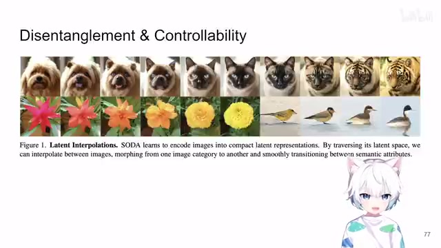
00:13:58–00:13:58 · 画面 022转写与来源说明 · 1 个自动复核提示
保留 78 个原始语音片段，1 个片段触发自动复核提示。提示仅用于定位可能的术语、重复或识别问题，不等于已确认错误。
讲解画面为源视频截图（640×360），不是可编辑 PPT 文件。全片按每秒 2 帧扫描内容变化，逐步展开页保留；连续动画保留代表画面。清晰度受源视频限制。
原视频：paper/合集_2026-10-16_表征学习/[论文速览]SODA Bottleneck Diffusion Models for Representation Learning[2311.17901].mp4
SHA-256：0c9d3d8bd87181f7f88a8f2d07e1cea1267470f699954e798ad948002075ed7e
再加上我们的 condition
全文按视频语音与画面制作。原论文可从上方链接下载；完整资料包保留全文、原始逐字稿、字幕和校对记录。